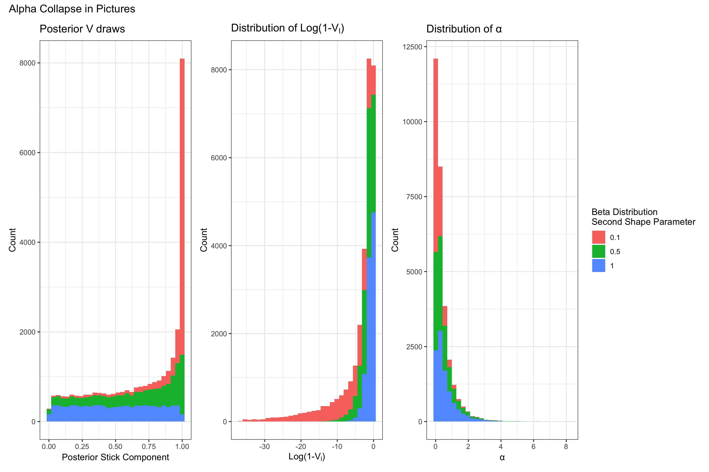

This post originally appeared in December 2019 during my PhD, on an earlier version of this website. It’s preserved here largely as-is; some links, code, or context may be out of date. I first encountered this issue while developing the method that would eventually become (Peterson et al. 2023).
In the Curious Case of the Collapsing Concentration Parameter: Part I, I described the Dirichlet Process (DP), some brief historical papers involved with its development, how it is most commonly used, and one specific peculiarity surrounding the concentration parameter’s behavior that arose in a simple simulation. In part II I’m going to unpack more of the mystery behind why this collapse occurs computationally and set the stage for our foray into the literature to discover who else has written on this subject. There’s a bit more math in this post, so buckle up.
Computation
If you recall, we had a very simple simulation, in which we wanted to see if our DP model could recover the simulated mixture components. However, in the course of examining our models’ results we found that \(\alpha\), the DP’s concentration parameter, had collapsed at zero. Why did it collapse? Well a simple look into the blocked gibbs sampler algorithm used to estimate \(\alpha\) is a good place to start.
While I would encourage a full derivation of the posterior with an arbitrary prior if you’re interested, we can use the case in which a conjugate gamma prior is used (with shape and rate parameters) as shown in Bayesian Data Analysis.
Since we’re using a conjugate prior, the posterior is also a gamma distribution with the following parameters:
\[ \alpha|- \sim \text{Gamma}(a_{\alpha} + L - 1, b_{\alpha} - \sum_{l=1}^{L-1} \log(1 - V_l)) \]
There is a lot to unpack in the above, so let’s get started. To begin with, \(a_{\alpha}\) and \(b_{\alpha}\) are the hyperparameters of the prior distribution of \(\alpha\). So to be complete, we would write \(\alpha \sim \text{Gamma}(a_{\alpha},b_{\alpha})\)1. \(L\) is the total number of sticks and \(V_l \in (0,1)\) are the parameter atom weight components2 from the DP’s stick breaking process, alluded to in Part I. The atom weight components become the weights through the following expression \(\pi_l = V_l \prod^{h < l} (1-V_h)\).
To show what that stick breaking process looks like in the posterior, I’ll next write down the posterior distribution of the \(V_l\):
\[ V_l| .. \sim Beta(1 + n_l, \alpha + \sum_{l'=l+1}^{L} n_{l'} ) \]
In the above, \(n_l\) is the number of observations assigned to the \(l\)th DP component and with that last definition, we should now have enough to piece together a bit of what must be happening here.
Let’s suppose our model is doing a really good job. It’s found the parameters, \(\theta\) (e.g. the mean parameter of a Poisson mixture component) that best describe the data. In that case, we’ll end up seeing more and more observations assigned to only those components neccessary to estimate the density3. That means a few \(n_{l}\) will be high, but the rest will be very low. In fact, if more of the \(n_{l}\) go to zero, then we’ll have \(\sum_{l'} n_{l'} \to 0\). If \(\alpha \approx 0\) at this point then \(V_{l}\) is very likely to be \(\approx 1\) from the lopsided Beta distribution.
Continuing on in our algorithm to the draw of \(\alpha\) from the posterior, we can now see how \(\alpha\) collapses. If \(V_{l} \approx 1\) then that means \(1 - V_{l} \approx 0 \rightarrow \log(1-V_{l}) \approx \infty\). When this parameter becomes infinity, the gamma distribution becomes degenerate at 0. Since our model is doing “well”, in that it is assigning observations with the highest probability to their appropriate components, this behavior doesn’t change, and we see $= 0 $ for the entirety of the MCMC chain.

That was some intense math we just walked through. If you don’t think you got it, feel free to walk through things again in order to really understand what is happening.
Okay, now we have an understanding of what happened computationally, but what does this mean for our model inference and does it mean we can still publish our model? After all, we can’t have been the first to encounter this behavior if the model has been around since the 1970’s, right? We’ll have to see what others say about this.
Collapse Interpretation
Let’s begin with what \(\alpha =0\) means in the context of the model. As we saw in Part I, the concentration parameter can increase or decrease how closely the process draws probabilities are to the base measure. In the posterior, the original concentration parameter also tells us how dependent the posterior is on the prior base measure. Looking at our marginal density after integrating out the DP we can find the following telling relationship between the base measure and posterior DP measure.
\[ f(y) = \sum^{L} ( \frac{n_l}{n+\alpha} )\mathcal{K}(y|\theta^*_l) + (\frac{\alpha}{n+\alpha})\int \mathcal{K}(y|\theta) dG_0(\theta) \]
From the above, we can see that when \(\alpha \to 0\) the marginal density estimate is entirely dependent on the estimated \(\theta^*\) from the posterior random measure and not on the base measure. This makes sense intuitively, because in the simulated case we discussed in part I, there was quite a bit of data and not so many mixture components close together that the model wouldn’t be able to identify them. The next question we might ask is whether or not the DP is well defined since \(\alpha=0\). After all, in most other models if you have a parameter completely zero out, that probably means that your entire model is broken. In the case of the DP however, its not so obvious that something is wrong. Quite the opposite, in fact.
Let’s look at that original definition of the Dirichlet Process from Part I.
a stochastic process \(P\) … is said to be a Dirichlet process … with parameter \(G_0\) if … \((P(A_1),...,P(A_k))\) has a Dirichlet distribution with parameter ($ G_0(A_1),…,G_0(A_k)))$
Clearly here, if the parameter \(\alpha=0\) then we have a problem, since the Dirichlet Distribution will have all 0’s for its parameters. However, when we look at the posterior distribution…
The posterior distribution of a DP conditional on y is another DP with parameter \(\alpha\) \(G_{0}\) \(+ \sum^L \pi_{l} \delta_{\theta_{l}} (\cdot)\)
The above means that now a finite realization of the DP in the posterior has a Dirichlet Distribution with parameters \(\alpha G_{0}\) \(+ \sum^L \pi_{l} \delta_{\theta_{l}} (\cdot)\) . This means that if \(\alpha=0\) the rest of the distribution is still well defined provided that at least some of the \(\pi_{l} \neq 0\)4.
Having reached this point, it’s time for a brief recap, before we look at what has been written about this in the literature about this subject in the next post.
What we’ve discovered
What we appear to have discovered is some poor mathematical construction. If the parameter \(\alpha\) can go to zero without affecting the rest of the model, in the posterior, then it should be defined as such in general. There are some obvious problems with allowing this in the prior, before any data is seen but there must be a better solution than the current parameterization. We need to explore further. In the final post in this series I’ll see what there is to be found when we look through the literature’s documentation of this process and its curious concentration parameter.
References
Footnotes
Aha! You might say, this peculiarity must be a consequence of using the Gamma prior! No dear, friend, unfortunately not, as you can see in the derivation of the alpha posterior in, e.g. Ishwaran, Hemant, and Mahmoud Zarepour. or Rodriguez, Dunson and Gelfand↩︎
Component weights here means that they’re not the actual weights \(w_l\) that end up defining the probabilities, but rather the random variables that end up determining those weights.↩︎
Typically a DP models involve a large number of components to ensure that there are enough to estimate the mixture density well.↩︎
This is my understanding anyway. I’d be interested to know why the case may be otherwise! Please reach out if you think this proves the distribution is no longer valid.↩︎